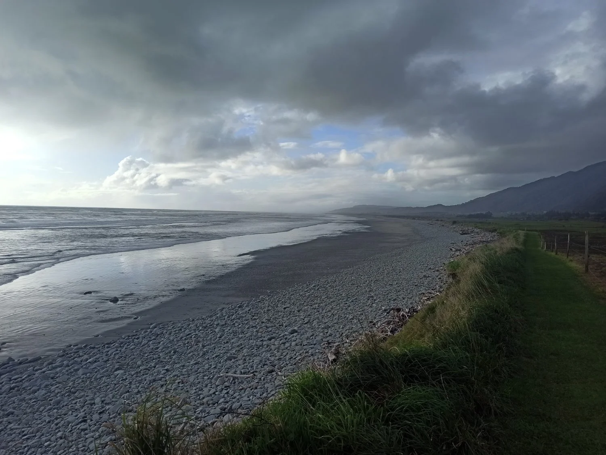

Monitoring Protocol
These protocols provide the guiding methodology for kororā/little penguin monitoring as part of the National Kororā Monitoring Programme and include best practice guidelines for microchipping kororā as recognised by DOC

Field Guidelines
A set of simplified field guides “cheat sheets” providing a quick overview of the Kororā Monitoring Protocols for Tier 1, Tier 3 and Tier 3 monitoring methods